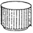
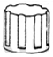
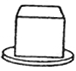
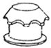
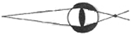
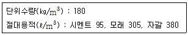

실내건축산업기사 (2008-05-11 기출문제)
1과목: 실내디자인론
1. 다음 중 2인용 침대인 더블베드(double bed)의 크기로 가장 적당한 것은?
- 1,000㎜ × 2,100㎜
- 1,150㎜ × 1,800㎜
- 1,350㎜ × 2,000㎜
- 1,600㎜ × 2,400㎜
(정답률: 89%)

2. 점에 대한 설명으로 옳지 않은 것은?
- 모든 방향으로 펼쳐진 무한히 넓은 영역이며 면들의 교차에서 나타난다.
- 하나의 점은 관찰자의 시선을 화면 안에 특정한 위치로 이끈다.
- 두 점의 크기가 같을 때 주의력은 균등하게 작용한다.
- 많은 점이 같은 조건으로 집결되면 평면감을 준다.
(정답률: 78%)
3. 전시공간에서 천장의 처리에 대한 설명 중 옳지 않은 것은?
- 조명기구, 공조설비, 화재경보기 등 제반 설비물을 설치한다.
- 천장 마감재는 흡음 성능이 높은 것이 요구된다.
- 시선을 집중시키기 위해 강한 색채를 사용한다.
- 이동스크린이나 전시물을 매달 수 있는 시설을 설치한다.
(정답률: 94%)
4. 다음 중 동선에 대한 설명으로 옳지 않은 것은?
- 동선은 사람이나 물건이 이동하면서 만든 궤적으로서 일상생활의 움직임을 표시하는 선이다.
- 동선의 기본은 동선의 시작에서 목적하는 지점에 이르는 끝까지 원활하고 자연스러운 흐름이 되도록 하는 것이다.
- 동선은 밀도, 크기, 길이의 3요소를 가지며 이들 요소의 정도에 따라 거리의 장단, 폭의 대소가 결정되어진다.
- 동선 사용의 빈도가 큰 공간은 주동선을 중심으로 배치한다.
(정답률: 85%)
5. 노인 침실 계획에 대한 설명으로 옳지 않은 것은?
- 일조량이 충분하도록 남향에 배치한다.
- 소외감을 갖지 않도록 가족공동공간과의 연결성에 주의한다.
- 바닥에 단 차이를 두어 공간에 변화를 주는 것이 바람직하다.
- 식당이나 화장실, 욕식 등에 가깝게 배치한다.
(정답률: 89%)
6. 조명의 배광방식에 따른 분류에 속하지 않는 것은?
- 직접조명
- 전반확산 조명
- 밸런스 조명
- 간접조명
(정답률: 68%)
7. 점차적인 변화와 질서방법을 요구하며, 연속과 절제를 통해 진보감을 느낄 수 있으며 시각적으로 경쾌한 율동감을 가질 수 있는 디자인의 구성원리는?
- 강조
- 점진
- 균형
- 대립
(정답률: 87%)
8. 다음 중 유니버셜 공간의 개념적 설명으로 가장 알맞은 것은?
- 표준화된 공간이다.
- 상업공간을 말한다.
- 모듈이 적용된 공간을 말한다.
- 공간의 융통성이 극대화된 공간을 말한다.
(정답률: 76%)
9. 실내디자인의 이미지 결정 요소와 거리가 가장 먼 것은?
- 음향감
- 색채
- 공간감
- 스타일
(정답률: 84%)
10. 디자인 요소 중 2차원적 형태가 가지는 물리적 특성이 아닌 것은?
- 질감
- 명도
- 패턴
- 부피
(정답률: 87%)
11. 다음 중 조명의 연출기법이 아닌 것은?
- 빔 플레이(beam play) 기법
- 윌 워싱(wall washing) 기법
- 그레이징(glazing) 기법
- 캐스케이드(cascade) 기법
(정답률: 87%)
12. 주택의 조명계획에 관한 설명 중 옳지 않은 것은?
- 현관은 일반적으로 조도가 높아 밝고 환하여 따뜻하고 환영받는 듯한 이미지를 줄 수 있는 것이 좋으므로 대개 천장에 전반조명을 설치한다.
- 거실은 활기찬 분위기를 연출하기 위해 방향성이 강한 직접조명 위주로 계획한다.
- 침실은 주조명으로 낮은 조도의 부드러운 확산광을 쓰고 국부조명으로 스탠드를 함께 사용하는 것이 이상적이다.
- 서재는 안정되고 차분한 분위기가 되도록 하고 독서 및 작업을 위한 부분에는 고조도의 국부조명으로 처리한다.
(정답률: 62%)
13. 디자인의 기본원리 중 척도(scale)와 비례에 관한 설명으로 옳지 않은 것은?
- 비례는 인간과 물체와의 관계이며, 척도는 물체와 물체 상호간의 관계를 갖는다.
- 비례는 물리적 크기를 선으로 측정하는 기하학적인 개념이다.
- 공간내의 비례관계는 평면, 입면, 단면에 있어서 입체적으로 평가되어야 한다.
- 비례는 대소의 분량, 장단의 차이, 부분과 부분 또는 부분과 전체와의 수량적 관계를 비율로서 표현 가능한 것이다.
(정답률: 40%)
14. 실내디자인의 기본 원리 중 인간의 주의력에 의해 감지되는 시각적 무게의 평행상태를 의미하는 것은?
- 균형
- 리듬
- 비례
- 변화
(정답률: 80%)
15. 인간의 감각적 요소 중 촉각적 요소보다 시각적 요소가 상대적으로 가장 많은 부분을 차지하는 것은?
- 벽
- 바닥
- 천장
- 기둥
(정답률: 78%)
16. 좋은 디자인을 판단하는 척도 중 우선순위가 가장 낮은 것은?
- 기능성
- 심미성
- 경제성
- 유행성
(정답률: 88%)
17. 주택 계획에서 LDK(Living Dining Kitchen)형에 대한 설명으로 옳지 않은 것은?
- 거실, 식당, 부엌을 개방된 하나의 공간에 배치한 것이다.
- 동선을 최대한 단축시킬 수 있다.
- 부엌에서 조리를 하면서 거실이나 식당의 가족과 대화할 수 있는 장점이 있다.
- 소요면적이 많아 소규모 주택에서는 도입이 어렵다.
(정답률: 88%)
18. 실내디자인의 프로세스를 조사분석(programming) 단계와 디자인 단계로 나눌 때 조사분석 단계에 속하지 않는 것은?
- 문제점의 인식
- 정보의 수집
- 아이디어 스케치
- 종합분석
(정답률: 80%)
19. 르꼬르뷔제의 모듈러에서 설명된 인체의 기본 치수로 옳지 않은 것은?
- 기본신장 : 183㎝
- 배꼽까지의 높이 : 113㎝
- 손을 들었을 때 손 끝까지 높이 : 226㎝
- 어깨까지의 높이 : 162㎝
(정답률: 66%)
20. 실내공간 요소 중 2차적 요소(가동적 요소)는?
- 조명
- 가구
- 계단
- 개구부
(정답률: 66%)
2과목: 색채 및 인간공학
21. 다음 중 주의 (Attention)의 특징으로 볼 수 없는 것은?
- 선택성
- 방향성
- 변동성
- 양립성
(정답률: 52%)
22. 다음 중 단위입각체 당 광원에서 방출되는 광속으로 측정하는 광도의 단위는?
- Im
- W
- cd
- lux
(정답률: 52%)
23. 다음 중 일반적으로 인체계측자료의 최소 집단치를 사용하여 설계하는 것이 바람직한 경우는?
- 선반의 높이
- 그네의 강도
- 문틀의 높이
- 비상탈출구의 크기
(정답률: 81%)
24. 피부의 감각 중 감수성이 가장 높은 것은?
- 통각
- 압각
- 냉각
- 온각
(정답률: 78%)
25. 소음을 측정하는 단위는 dB의 가청 최소 수준은?
- 0
- 1
- 10
- 100
(정답률: 22%)
26. 다음 중 이력자극으로서 시각장치보다 청각장치의 사용이 유리한 경우는?
- message가 복잡한 경우
- message가 긴 경우
- message가 공간적 위치를 다루는 경우
- message가 즉각적인 행동을 요구하는 경우
(정답률: 75%)
27. 다음 중 시각을 대체할 수 있는 촉각 표시장치로 가장 적절한 것은?
- 보안기
- 안경
- 점자판
- 보청기
(정답률: 81%)
28. 다음 중 청력손실이 가장 크게 나타나는 진동수는 약 몇 Hz인가?
- 500
- 1000
- 4000
- 10000
(정답률: 53%)
29. 다음 조종장치 중 단회전용 조작장치로 가장 적절한 것은?




(정답률: 65%)
30. 그림과 같이 상이 망막 후방에 생기는 눈을 무엇이라 하는가?

- 정시안
- 근시안
- 원시안
- 난시안
(정답률: 63%)
31. 우리 눈으로 지각하는 가시광선의 파장 범위는?
- 약 280~680㎚
- 약 380~780㎚
- 약 480~880㎚
- 약 580~980㎚
(정답률: 75%)
32. 오스트발트 색채 체계와 관련이 없는 것은?
- 헤링의 4 원색설
- C +W +B =100%
- 20색상환
- 등순계열
(정답률: 46%)
33. 색의 3 속성을 인간의 눈이 가장 예민하게 감각 하는 것부터 순서대로 나열한 것은?
- 명도 - 색상 - 채도
- 명도 - 채도 - 색상
- 색상 - 명도 - 채도
- 색상 - 채도 - 명도
(정답률: 29%)
34. 다음 중 색의 온도감이 가장 낮은 것은?
- 연두
- 흰색
- 녹색
- 노랑
(정답률: 60%)
35. 색체계에서 “규칙적으로 선택된 색은 조화된다.” 라는 원리는?
- 동류성의 원리
- 질서의 원리
- 친근성의 원리
- 명료성의 원리
(정답률: 77%)
36. 공장 내의 안전색채 사용에서 가장 고려해야 할 점은?
- 순응성
- 항상성
- 연색성
- 주목성
(정답률: 69%)
37. 디지털 색채에 관한 설명으로 틀린 것은?
- HSB 시스템은 Hue, Saturation, Bright 모드로 구성되어 있다.
- 16진수 표기법은 각각 두 자리씩 RGB 값을 나타낸다.
- Lab 시스템에서 L^은 밝기, a^는 노랑과 파랑의 색대, b^는 빨강과 녹색의 색대를 나타낸다.
- CMYK 모드 각각의 수치 범위는 0~100%로 나타낸다.
(정답률: 52%)
38. 2가지 이상의 색을 목적에 알맞게 조화되도록 만드는 것은?
- 배색
- 대비조화
- 유사조화
- 대비
(정답률: 72%)
39. 색채의 연상은 그 색을 보았을 때 기본적으로 떠올리게 되는 감성적 특징이다. 보라색이 순색이었을 경우 연상되는 것은?
- 기쁨, 정열, 위험, 혁명
- 희망, 이상, 진리 , 냉정, 젊음
- 화려함, 악동, 무질서, 명예
- 고귀, 섬세함, 권력, 우아
(정답률: 75%)
40. 다음 중 항상성에 관한 설명으로 옳은 것은?
- 시야가 좁거나 관찰시간이 짧으면 항상성이 약하다.
- 조명이 단색광이고, 가까이 있으면 항상성이 강하다.
- 밝기의 항상성은 밝은 물건 쪽이 약하고, 어두운 물건 쪽은 강하게 된다.
- 색의 항상성의 방향은 고유색에 멀어진다는 설과 조명색의 보색에 멀어진다는 설이 있다.
(정답률: 35%)
3과목: 건축재료
41. 보통포틀랜드시멘트 제조시 석고를 넣는 이유로 알맞은 것은?
- 강도를 높이기 위하여
- 균열을 줄이기 위하여
- 응결시간 조절을 위하여
- 수축팽창을 줄이기 위하여
(정답률: 64%)
42. 백색시멘트와 종석, 안료를 혼합하여 천연석과 유사한 외관을 가진 인조석으로 만든 것으로서 의석 또는 캐스트 스톤(cast stone)이라고도 하는 것은?
- 모조석 (imitation stone)
- 리신바름 (lithin coat)
- 라프코트 (rough coat)
- 인조석 바름
(정답률: 48%)
43. 강의 탄소함유량이 증가함에 따른 성질 변화에 관한 설명 중 옳지 않은 것은?
- 경도가 높아진다.
- 인성이 낮아진다.
- 연성이 낮아진다.
- 용접성이 좋아진다.
(정답률: 39%)
44. 다음의 인조석 및 석재가공제품에 대한 설명 중 틀린 것은?
- 테자료는 대리석, 사문암 등의 종석을 백색시멘트나 수지로 결합시키고 가공하여 생산한다.
- 에보나이트는 주로 가구용 테이블 상판, 실내벽면 등에 사용된다.
- 패블스톤은 조약돌의질감을 내지만 백화현상의 우려가 있다.
- 초경량 스톤패널은 로비(lobby) 및 엘리베이터의 내장재등으로 사용된다.
(정답률: 28%)
45. 프탈산과 글리세린수지를 변성시킨 포화폴리에스테르수지로 내후성, 접착성이 우수하며 도료나 접착제 등으로 사용되는 합성수지는?
- 알키드수지
- A.B.S 수지
- 스티롤수지
- 에폭시수지
(정답률: 36%)
46. 다음의 합성수지도료에 대한 설명 중 옳지 않은 것은?
- 유성페인트보다 가격이 저렴하다.
- 유성페인트보다 건조시간이 빠르고 도막이 단단하다.
- 유성페인트보다 내산, 내알칼리성이 우수하다.
- 유성페인트보다 방화성이 우수하다.
(정답률: 39%)
47. 다음의 미장재료 중 균열 발생이 가장 적은 것은?
- 회반죽
- 시멘트 모르타르
- 경석고 플라스터
- 돌로마이트 플라스터
(정답률: 52%)
48. 다음의 파티클 보드(particle board)에 대한 설명 중 옳지 않은 것은?
- 강도는 섬유의 방향에 따라 차이가 크다.
- 경질 파티클보드는 변형이 적다.
- 폐재, 부산물 등 저가치재를 이용하여 넓은 면적의 판상제품을 만들 수 있다.
- 경량 파티클보드는 흡음성, 열차단성이 경질 파티클보드보다 크다.
(정답률: 54%)
49. 다음 중 목재의 열적 성질에 대한 설명으로 틀린 것은?
- 목재는 내부에 치밀한 섬유조직으로 구성되어 있어 금속이나 콘크리트에 비해 열전도율이 크다.
- 수분에 의한 팽창수축에 비하면 열적 변형은 매우 적으므로, 목재의 열적 변형이 실용적으로 문제가 되지는 않는다.
- 목재는 180 전후에서 열분해가 시작되며, 350~450가 되면 화기가 없어도 자연발화된다.
- 목재의 연소현상은 목재의 열전도도, 비중, 함유성분, 함수율 등에 의해 영향을 받는다.
(정답률: 66%)
50. 도장재료의 주요 구성요소 중 도막에 색을 주거나, 기계적인 성질을 보강하는 역할을 하는 불용성 요소는?
- 안료
- 전색제
- 첨가제
- 용제
(정답률: 60%)
51. 도자기 중 자기에 대한 설명으로 옳은 것은?
- 다공질로서 두드리면 탁음이 난다.
- 흡수율이 5% 이하이다.
- 1000 이하에서 소성된다.
- 위생도기 및 모자이크 타일 등으로 사용된다.
(정답률: 69%)
52. 점토 재료에 관한 설명 중 옳지 않은 것은?
- 점토의 주성분은 실리카(SiO2), 알루미나(Al2O3) 등이다.
- 점토의 가소성이 너무 큰 경우에는 모래나 샤모트 등을 혼합하며 조절한다.
- 보토역돌, 기와, 토관의 원료로는 주로 석회질 점토가 사용된다.
- 점토의 소성온도 측정법으로 제게르 콘(Seger Cone)법이 있다.
(정답률: 45%)
53. 미장작업시 코너비드(corner bead)는 주로 어디에 사용되는가?
- 천장
- 거푸집
- 계단 디딤판
- 기둥의 모서리
(정답률: 84%)
54. 다음 중 열 및 전기 전도율이 가장 큰 금속은?
- 알루미늄
- 크롬
- 니켈
- 구리
(정답률: 59%)
55. 다음 시험 중 시멘트의 안정성 시험은?
- 슬럼프 테스트
- 브레인법
- 길모아 시험
- 오토클레이브 팽창도 시험
(정답률: 70%)
56. 유리를 600℃이상의 연화점까지 가열하여 특수한 장치로 균등히 공기를 내뿜어 급랭시킨 것으로 강하고 또한 파괴도어도 세립상으로 되는 유리는?
- 겹친유리
- 강화유리
- 망입유리
- 복층유리
(정답률: 63%)
57. 다음의 아스팔트 제품에 대한 설명 중 옳지 않은 것은?
- 아스팔트유저는 블론아스팔트를 용제에 녹인 것으로 아스팔트 방수의 바탕처리재로 이용된다.
- 아스팔트블록은 아스팔트모르타르를 벽돌형으로 만든 것으로 화학공장의 내약품 바닥마감재로 이용된다.
- 아스팔트싱글은 모래붙임루핑에 유사한 제품을 석면플레이트판과 같이 지붕재료로 사용하기 좋은 형으로 만든 것이다.
- 아스팔트펠트는 유기천연섬유 또는 석면섬유를 결합한 원지에 연질의 스트레이트아스팔트를 침투시킨 것이다.
(정답률: 44%)
58. 투명도가 높으므로 유기유리라는 명칭이 있고 착색이 자유로우며 내충격 강도가 무기유리의 10배 정도로 채광판, 도어판, 칸막이판 등에 이용되는 것은?
- 아크릴수지
- 알키드수지
- 멜라민수지
- 폴리에스테르수지
(정답률: 80%)
59. AE콘크리트의 절대용적배합을 나타낸 것이다. 이 콘크리트의 물시멘트비는? (단, 시멘트의 비중은 3.15이다.)

- 50%
- 55%
- 60%
- 65%
(정답률: 43%)
60. 다음의 목재 중 실내 치장용으로 사용하기에 가장 적합하지 않은 것은?
- 느티나무
- 단풍나무
- 오동나무
- 소나무
(정답률: 62%)
4과목: 건축일반
61. 강구조에 대한 설명 중 틀린 것은?
- 큰 스팬의 구조물이나 고층 건축물에 적합하다.
- 피복이 없어도 내구적이며 내화적이다.
- 소성변형능력이 크다.
- 단면에 l해 부재가 세장하므로 좌굴하기가 쉽다.
(정답률: 43%)
62. 모재의 접합에 관한 설명 중 옳지 않은 것은?
- 접합부는 다른 재료로 보강하지 않도록 한다.
- 목재의 접합은 이음, 맞춤, 쪽매로 구분할 수 있다.
- 이음은 2개 이상의 목재를 길이방향으로 붙여 1개의 부재로 만드는 것이다.
- 이음맞춤은 그 응력이 작은 곳에서 만든다.
(정답률: 67%)
63. 바우하우스에 관한 설명 중 옳지 않은 것은?
- 과거양식을 지향하여 종합적으로 연구하였다.
- 월터 그로피우스에 의해 설립되었다.
- 예술과 공업생산을 결합하여 모든 예술의 통합화를 추구하였다.
- 이론과 실기교육을 병용하였다.
(정답률: 63%)
64. 높이 31m를 넘는 각 층의 바다면적 중 최대 바닥면적이 7,500m2인 건축물의 경우 비상용 승강기는 최소 몇 대 이상을 설치하여야 하는가?
- 2대
- 3대
- 4대
- 5대
(정답률: 46%)
65. 르네상스 건축에 관한 설명 중 옳지 않은 것은?
- 건축가들은 교회를 설계하는데 있어 고전적 오더가 지니고 있는 인간중심적 요소들을 추출하여 고대의 방법으로 설계하였다.
- 부르넬레스키, 알베르티, 레오나르도 다빈치, 미켈란젤로 등이 활동하였다.
- 아치와 볼트가 주로 사용되었으며 대표작으로는 샤르트르 성당 , 노트르담 성당, 랭스 성당 등이 있다.
- 이상적인 비례체계와 중앙집중식 평면을 건축계획 개념으로 추구하였다.
(정답률: 38%)
66. 다음 중 소방시설의 구분에 속하지 않는 것은?
- 소화설비
- 급수설비
- 경보설비
- 피난설비
(정답률: 69%)
67. 우리 나라 전통건축물에 사용되는 단청에 대한 설명 중 틀린 것은?
- 단청에 사용되는 색은 흔히 오방색(五方色)으로 일컫는 청색, 백색, 적색, 흑색 및 황색을 주로 사용한다.
- 단청은 목조건축물 이외에 고분, 공예품 등에도 사용하였으며 서화에 병용되기도 하였다.
- 단청은 건물의 미화와 내구적인 보호를 위해 사용되었다.
- 단청기법에는 모로단청, 금단청, 가칠단청이 사용되었으며 이 가운데 가장 복잡, 화려한 것은 모로단청이다.
(정답률: 62%)
68. 다음 중 포스트 모더니즘(Post Modernism)과 가장 거리가 먼 것은?
- 복합성
- 모호성
- 상징성
- 실용성
(정답률: 23%)
69. 교육연구시설 중 학교의 교실 바닥면적이 300m2인 경우 환기를 위하여 설치하여야 하는 창문 등의 최소 면적은?
- 5m2
- 10m2
- 15m2
- 30m2
(정답률: 64%)
70. 특정소방대상물의 방화관리자는 선임 사유 발생일로부터 몇 일 이내에 선임되어야 하는가?
- 7일
- 15일
- 30일
- 45일
(정답률: 58%)
71. 6층의 업무시설에서 거실에 설치하는 배연설비의 설치 기준 내용으로 옳지 않은 것은?
- 배연창의 유효면적은 1m2이상으로 한다.
- 배연구는 연기감지기 또는 열감지기에 의하여 자동으로 열수있는 구조로 하고, 손으로는 열고 닫을 수 없도록 한다.
- 방화구획이 설치된 경우에는 그 구획마다 1개소 이상의 배연창을 설치한다.
- 배연구는 예비전원에 의하여 열 수 있도록 한다.
(정답률: 75%)
72. 철근콘크리트 구조에 관한 설명 중 틀린 것은?
- 철근과 콘크리트의 선팽창계수는 거의 같다.
- 철근과 콘크리트의 응력전달은 철근표면의 부착력에 의한다.
- 철근과 콘크리트의 응력분담은 각각의 단면적비에 의한다.
- 콘크리트는 내구 내화성이 있어 철근을 피복 보호한다.
(정답률: 50%)
73. 서양건축 양식의 역사적인 순서가 올바른 것은?
- 비잔틴 → 로마네스크 → 고딕 → 르네상스
- 비잔틴 → 고딕 → 로마네스크 → 르네상스
- 로마네스크 → 비잔틴 → 르네상스 → 고딕
- 고딕 → 로마네스크 → 비잔틴 → 르네상스
(정답률: 53%)
74. 다음 중 철근콘크리트 기둥에 사용하는 띠철근에 관한 설명으로 옳지 않은 것은?
- 기둥의 양단부보다 중앙부에 많이 배근한다.
- 콘크리트가 수평으로 터져나가는 것을 구속한다.
- 주근의 좌굴을 방지한다.
- 수평력에 의해 발생하는 전단력에 저항한다.
(정답률: 63%)
75. 연약한 자반에서 부동침하를 방지하는 대책으로 옳지 않은 것은?
- 지하실을 강성체로 설치한다.
- 지지말뚝과 마찰말뚝을 혼용한다.
- 건물을 경량화한다.
- 이웃건물과의 거리를 멀게 한다.
(정답률: 44%)
76. 상하플랜지에 ㄱ형강을 쓰고 웨브재로 대철을 45°, 60° 또는 90° 등의 일정한 각도로 접합한 강구조의 조립보는?
- 격자보
- 래티스보
- 형강보
- 판보
(정답률: 44%)
77. 건축물의 내부에 설치하는 피난계단의 구조에 대한 설명 중 틀린 것은?
- 건축물의 내부에서 계단실로 통하는 출입구의 유효너비는 0.9m 이상으로 한다.
- 계단실의 실내에 접하는 부분의 마감은 불연재료로 한다.
- 계단은 내화구조로 하고 피난층 또는 지상층까지 직접 연결되도록 한다.
- 건축물의 내부와 접하는 계단실의 창문 등의 면접은 각각 2m2 이하로 한다.
(정답률: 58%)
78. 목구조의 가새에 관한 설명으로 옳지 않은 것은?
- 가새의 경사는 수평에 가까울수록 유리하다.
- 목조벽체를 안정한 구조로 하기 위해 사용한다.
- 가새에는 압축응력과 인장응력이 번갈아 일어난다.
- 버팀대보다 수평력에 대한 저항이 강력하다.
(정답률: 59%)
79. 건축물의 용도가 같을 때 승용승강기 설치 대수가 다르게 적용되는 기준은?
- 6층 이상의 바닥면적의 합계
- 6층 이상의 거실면적의 합계
- 건축물의 높이
- 바닥면적의 합계
(정답률: 35%)
80. 규정에 의하여 연면적 200m2를 초과하는 건축물에 설치하는 복도의 최소 유효너비로 틀린 것은? (단, 양옆에 거실이 있는 복도임)
- 중학교 - 2.4m
- 병원(당해 층 거실의 바닥면적 합계가 200m2 이상인 경우) - 1.8m
- 공동주택 - 1.8m
- 오피스텔 - 1.5m
(정답률: 40%)
- "1,000㎜ × 2,100㎜": 가로가 너무 짧고 세로가 너무 길어서 불편할 수 있다.
- "1,150㎜ × 1,800㎜": 가로와 세로가 모두 짧아서 2인이 사용하기에는 좁을 수 있다.
- "1,350㎜ × 2,000㎜": 가로와 세로가 적당하게 넓고 길어서 2인이 사용하기에 편안하다.
- "1,600㎜ × 2,400㎜": 가로와 세로가 너무 넓어서 공간을 많이 차지하고, 침실이 작은 경우에는 부적합할 수 있다.